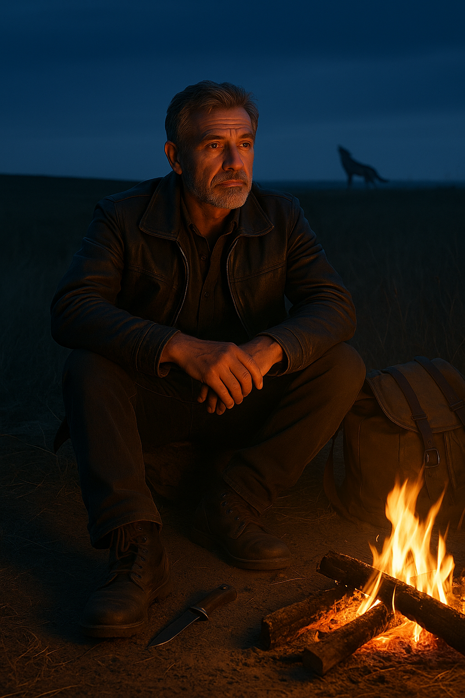
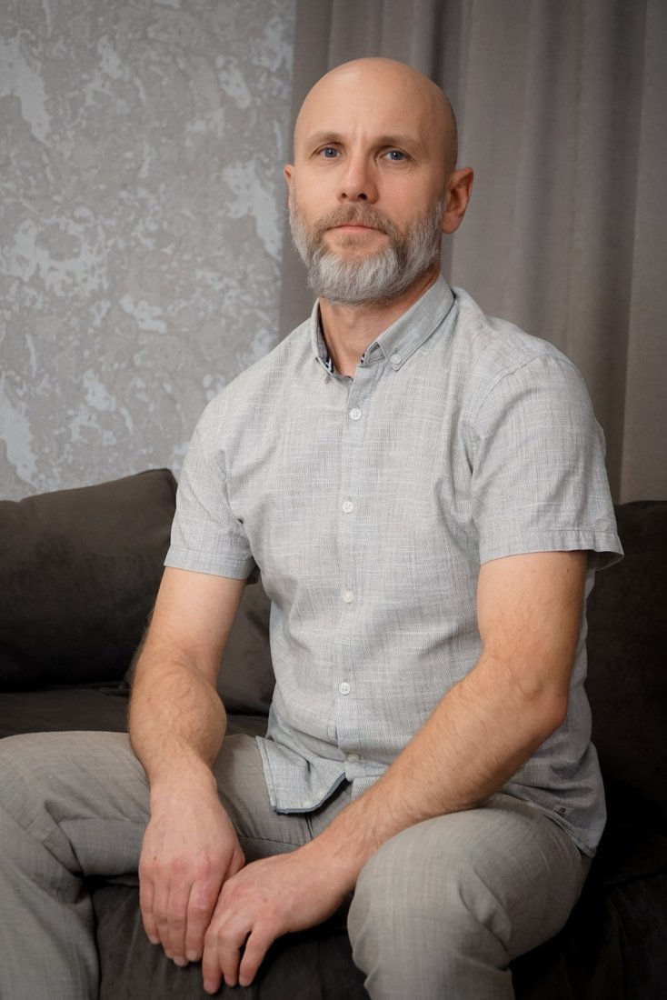

Хто я? Who am I?
Мій досвід, погляди й те, навіщо я створив цей сайт. My experience, my outlook, and why I created this site.


Про мене About Me
Привіт!
Мені завжди було цікаво розбиратися, як усе влаштовано. Механізми, техніка, різні системи. Я технар і за професією, і за способом мислення. Люблю докопатися до суті, зрозуміти, що з чим пов’язано, чому щось працює саме так, а не інакше.
З часом до цього додався ще один інтерес — людина. Її думки, рішення, поведінка, суперечності. І, звичайно, я сам.
Але не подумай, що я живу суцільною логікою. У мене, як і в інших, є почуття, емоції, радощі, сумніви. Я можу помилятися, розчаровуватися, переживати важкі моменти. Просто мені цікаво не лише проживати все це, а й іноді розуміти, що саме відбувається.
Мій шлях до себе почався не вчора.
Понад двадцять років тому я відмовився від алкоголю. Це було одне з важливих рішень у моєму житті. Потім було багато різного: книжки, семінари, знайомства з різними вченнями, пошуки відповідей.
Були відкриття. Були й розчарування.
Поступово я зрозумів одну просту для себе річ: ніхто не може прожити моє життя замість мене. Так само і я не можу прожити чуже.
Мене зацікавили архетипи. Спочатку через власні переживання й реакції, яких я не міг до кінця пояснити. Знайомство з архетипами дало мені новий спосіб подивитися на себе.
Але з часом я побачив і обмеження будь-яких описів людини. Тест, архетип, психологічна концепція чи чужа думка можуть щось підказати. Та жоден опис не здатен умістити всю людину.
Звідси й один із головних принципів цього сайту:
Людина первинна. Її опис — вторинний.
Я не вважаю себе людиною, яка знає, як правильно жити іншим. Та й хто я такий, щоб це визначати?
Можу поділитися тим, що знаю, що пережив, що зрозумів. Можу показати можливий напрямок, запропонувати інструмент, допомогти розібрати складне питання. Але вибирати свій шлях кожен має сам.
Саме тому я створив «Я є. I Am.».
Тут є інструменти для дослідження себе, своїх думок і життєвих ситуацій. Є мої статті, спостереження, роздуми. Є й трохи гумору, бо життя не складається лише із серйозних питань.
Мені важлива практика. Мало просто прочитати цікаву думку. Значно цікавіше перевірити її, спробувати застосувати й подивитися, що з цього вийде.
Навіщо мені все це?
По-перше, мені цікаво. Я люблю досліджувати, створювати й перевіряти нове.
По-друге, хочу, щоб мої напрацювання могли бути корисними іншим. Не всім і не обов’язково. Тим, кому вони знадобляться.
По-третє, я хочу, щоб ця справа приносила мені дохід. Я вкладаю в неї свій час, працю, досвід і бачу можливість заробляти на особистій допомозі людям у розборі їхніх ситуацій. Без продажу чудес і гарантованих результатів.
А ще мені цікаво знайомитися з людьми, з якими можна обмінюватися думками, сперечатися, відкривати щось нове.
Я не знаю, куди зрештою приведе цей проєкт. І не збираюся вигадувати відповідь заздалегідь.
Сайт уже є. Інструменти вже є. Можна заходити, пробувати, користуватися.
А далі — побачимо.
Hello!
I’ve always been curious about how things work. Mechanisms, technology, different systems. I’m a technical person by profession and by the way I think. I like getting to the heart of things, understanding what connects to what, and why something works one way rather than another.
Over time, another interest joined the list: people. Their thoughts, decisions, behavior, contradictions. And, of course, myself.
But don’t think my life is all logic. Like anyone else, I have feelings, emotions, joys, and doubts. I make mistakes, get disappointed, and go through difficult moments. I’m interested not only in living through them, but sometimes in understanding what’s happening.
My journey of getting to know myself didn’t begin yesterday.
More than twenty years ago, I stopped drinking alcohol. It was one of the important decisions in my life. Much followed: books, seminars, encounters with different teachings, and searches for answers.
There were discoveries. And there were disappointments.
Gradually I came to understand something simple for myself: no one can live my life for me. And I cannot live someone else’s.
I became interested in archetypes, initially because of my own experiences and reactions that I couldn’t fully explain. Learning about archetypes gave me a new way to look at myself.
But with time, I also saw the limitations of any description of a person. A test, an archetype, a psychological concept, or someone else’s opinion may offer a clue. None of them can contain the whole person.
That leads to one of this site’s central principles:
The person comes first. Any description of them comes second.
I don’t consider myself someone who knows how others should live. Who am I to decide that?
I can share what I know, what I’ve experienced, and what I’ve come to understand. I can point toward a possible direction, offer a tool, or help untangle a difficult question. But each person has to choose their own path.
That is why I created “Я є. I Am.”
Here you’ll find tools for exploring yourself, your thoughts, and life situations. There are my articles, observations, and reflections. There’s also some humor, because life isn’t made up entirely of serious questions.
Practice matters to me. Simply reading an interesting idea is not enough. It’s far more interesting to test it, try applying it, and see what happens.
Why am I doing this?
First, because I’m curious. I enjoy exploring, creating, and testing new things.
Second, I want what I’ve developed to be useful to others. Not everyone, and not necessarily. Just those who find it useful.
Third, I want this work to earn me an income. I invest my time, effort, and experience, and I see an opportunity to earn through personally helping people explore their situations. Without selling miracles or guaranteed outcomes.
I also enjoy meeting people with whom I can exchange ideas, disagree, and discover something new.
I don’t know where this project will eventually lead. And I’m not going to invent an answer in advance.
The site is here. The tools are here. You can come in, try them, and use them.
And we’ll see where it goes.